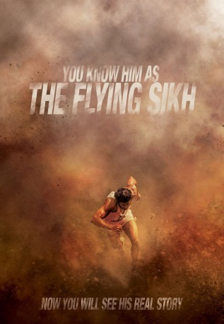

#4691 Lauf seines Lebens - The Flying Sikh
Alternativ: Bhaag Milkha Bhaag
 
 IMDB-Wertung: 8.3 / 10
IMDB-Wertung: 8.3 / 10  Metascore: 0
Metascore: 0 
Milkha ist ein glückliches Kind, etwas vorlaut, aber geborgen in seiner Familie und in dem Dorf, in dem er aufwächst. Diese Idylle wird jäh zerstört, als im indo-pakistanischen Bürgerkrieg fast seine gesamte Familie vor seinen Augen getötet wird. ,,Bhaag, Milkha, Bhaag"- ,,Lauf, Milkha, lauf", sind die Worte, die ihn sein Leben lang begleiten, denn das ist das letzte, was sein Vater ihm zuruft, bevor er ermordet wird. Fortan muss sich der Junge alleine durchschlagen - und um an Essen zu kommen, stiehlt er zunächst, bis er eines Tages an einem Wettrennen teilnimmt - und gewinnt. Milkha entwickelt sich zum Ausnahmesportler, einem Läufer, der alle Rekorde bricht und schließlich als ,,The Flying Sikh" berühmt wird.
Jahr: 2013
Dauer: 152 Minuten
FSK: 12
Land: Indien Studio: Cargo RecordsTonspuren:
Untertitel: Deutsch,
Auflösung: 1080p (1920x808) Größe: 7065 MB
Genre: Action, Drama, Sport, Geschichte, Biographie
Regisseur: Rakeysh Omprakash Mehra
Drehbuch: Adam Kreutner
Soundtrack:
Darsteller:
- Farhan Akhtar als Milkha Singh
- Sonam Kapoor als Biro
- Pavan Malhotra als Milkha Singh's Coach / Gurudev Singh
 Art Malik als Sampuran Singh / Milkha Singh's father
Art Malik als Sampuran Singh / Milkha Singh's father- Rebecca Breeds als Stella
- Divya Dutta als Isri Kaur / Milkha Singh's elder sister
- Rakeysh Omprakash Mehra als Pilot / Himself
- K.K. Raina als Mr. Wadhwa
- Prakash Raj als Army Officer
- Meesha Shafi als Perizaad
- Nawab Shah als Javed Sheikh / Pakistan National Team Coach
- Dalip Tahil als Jawahar Lal Nehru
- Herry Tangiri als Taran Singh
- Préity Üupala als Journalist, 2013
- Japtej Singh als Milkha Singh, Childhood
- Yograj Singh als Indian Coach / Ranveer Singh
- Jass Bhatia als Mahinder
- Divjot Singh Chandhok als Colonel
- Chinmay Chandraunshuh als Sampreet / Milkha Singh's friend
- Chandan Gill als Sampreet Singh
- Dev Gill als Abdul Khaliq
- Sumit Gulati als Suresh kumar
- Sanjay Gurbaxani als Army Officer
- Hikaru Ito als Emperor of Japan
- Shanta Kumar als Gen. Ayub Khan
- Marcel Alexander Larsen als German runner
- Poorva Neeraj als Sampreet's Wife
- Md. Sahidur Rahaman als Rana
- Yash Saxena als
- Geeta Agrawal Sharma als Milkha Singh's mother
- Shriswara als Nimmi
- Richard White als Coach Peter Hamilton
Datei: X:\2013(I-M)\Lauf seines Lebens - The Flying Sikh (2013, FSK, 1920x808).mkv seit 04.11.2016
Festplatte: HD 2013(I-Z)-2014(A-Z)
 Es gibt insgesamt 89 Filme in der Gruppe '2013(I-M)'
Es gibt insgesamt 89 Filme in der Gruppe '2013(I-M)'